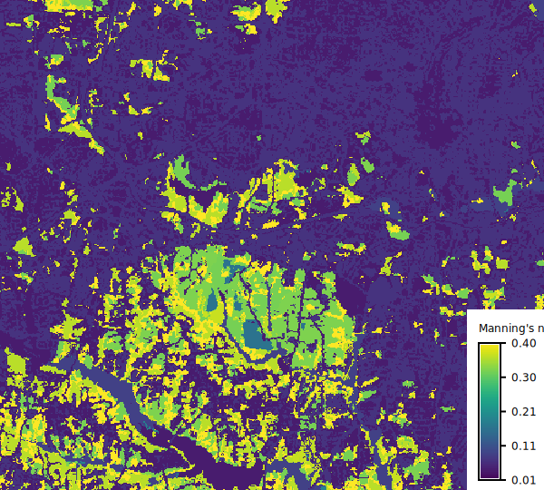

r.manning converts a land cover raster to a Manning's roughness coefficient raster for use in hydraulic and hydrological modeling.
Manning's roughness coefficient (Manning's n) quantifies the resistance to flow over a surface and is a key parameter in hydraulic simulations such as flood modeling, overland flow, and channel flow calculations.
The input parameter specifies the land cover raster map. The tool supports two standard land cover classification systems specified by landcover: NLCD (National Land Cover Database) used in the United States, and ESA WorldCover used globally.
Manning's coefficients for ESA WorldCover are based on values used by QGIS Manning's Roughness Generator plugin by Azzam. For NLCD, the source parameter selects the source of Manning's n coefficients:
The method parameter controls which roughness estimate to use:
For custom land cover classifications, use landcover=custom with a rules file in CSV format.
Kalyanapu et al. (2009) does not include ranges for Manning's n values. These were estimated using 0.75/1.33 multipliers on the original single values to reflect ranges from Chow (1959). These multipliers were also used to estimate default values from ranges in the HEC-RAS 2D User's Manual.
Kalyanapu et al. (2009) does not include NLCD value for cultivated crops, this tool uses conventional tillage from McCuen (2005).
For custom land cover classifications, provide a CSV file with the rules parameter. Two formats are supported:
Single value (used for all methods):
# code,n 1,0.035 2,0.120 3,0.050
Three values (low, medium, high):
# code,n_low,n_medium,n_high 1,0.025,0.035,0.045 2,0.080,0.120,0.160 3,0.040,0.050,0.060
Lines starting with # are treated as comments.
Manning's n values are inherently uncertain due to spatial and temporal variability in vegetation density, surface conditions, and flow characteristics. The method=random option generates spatially uniform random values between low and high bounds for each land cover class, which can be used for Monte Carlo uncertainty analysis.
Import NLCD into North Carolina sample dataset and convert it to Manning's n using Kalyanapu values for shallow overland flow:
r.manning input=nlcd_landcover output=mannings_n \
landcover=nlcd source=kalyanapu

Use HEC-RAS values for flood modeling:
r.manning input=nlcd_landcover output=mannings_n \
landcover=nlcd source=hecras
r.manning input=worldcover output=mannings_n \
landcover=worldcover
r.manning input=nlcd_landcover output=mannings_n \
landcover=nlcd source=kalyanapu method=high
Generate random Manning's n values for stochastic simulation:
from grass.tools import Tools
tools = Tools()
for i in range(100):
tools.r_manning(
input="nlcd_landcover",
output=f"mannings_n_{i}",
landcover="nlcd",
source="kalyanapu",
method="random",
seed=i,
)
Use the output with GRASS hydrological simulation:
r.manning input=nlcd_landcover output=mannings_n \
landcover=nlcd source=kalyanapu
r.sim.water elevation=dem dx=dx dy=dy \
man=mannings_n depth=water_depth
Anna Petrasova, NCSU Center for Geospatial Analytics
{kind=link}